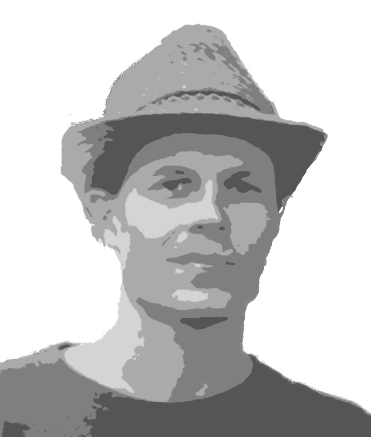

Red Sea Explorer
Android application that contain images and descriptions of over 600 marine species in Red Sea.
Codes | Thinks | Travels
...but not necessarily in this order.
Contact
- ranapnea@gmail.com
- Tampere
- Finland
| Creates
under construction:
World history
Concise timeline view of World History. Uses Timeline JS for displaying the contents.
